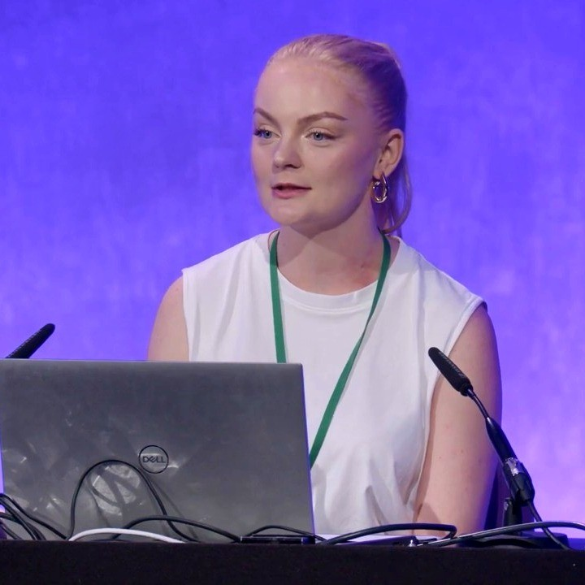
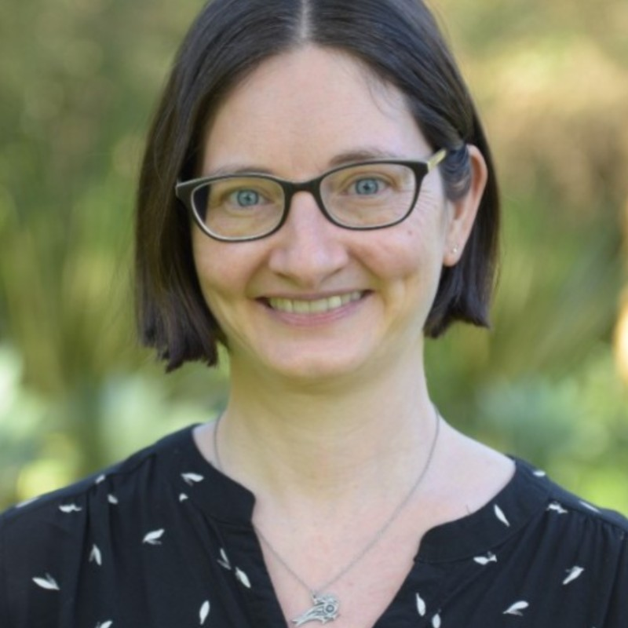
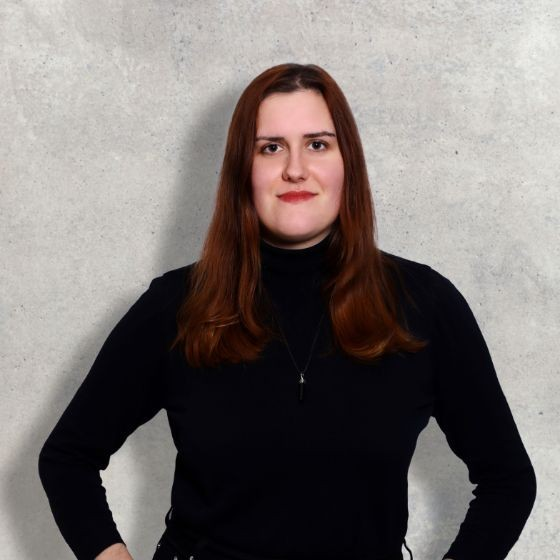
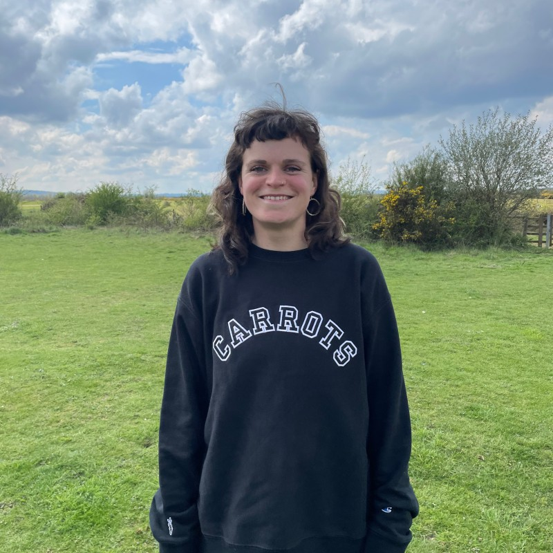

Hello, thanks so much for stopping by!
We are a group of four that joined the Women+ in Geospatial Peer Mentorship scheme in October 2023. We meet once a week, and speak to each other about career paths, our day to day work, upskilling, we've watched documentaries and discussed it like a book club, it's been a really supportive network and environment.
Our legacy project is something we produce at the end of the peer mentorship, and we collectively decided on a podcast, discussing some of the things we do on a weekly basis and also asking the questions we think others in our field and beyond would be interested in.
We hope you enjoy!
Listen to the Episode
Who We Are
Hannah
Hannah is from the UK and currently works as a Geospatial Analyst for an energy company and lives in Stavanger, Norway.
Find Hannah on LinkedIn here.
Nicole
Nicole lives in Hamburg, Germany, and works as the Corporate Partnerships Lead at the Humanitarian OpenStreetMap Team, an organization that helps create and use open map data to help solve the world's problems.
Find Nicole on LinkedIn here.
Marie
While working on her master's thesis, Marie works for a small company as a GIS Developer in the renewable energy sector in Berlin.
Find Marie on LinkedIn here.
Flora
Flora is from Bristol in the UK, and works as a technical educator in Geographic Information Systems (GIS) at the University of the West of England.
Find Flora on LinkedIn here.